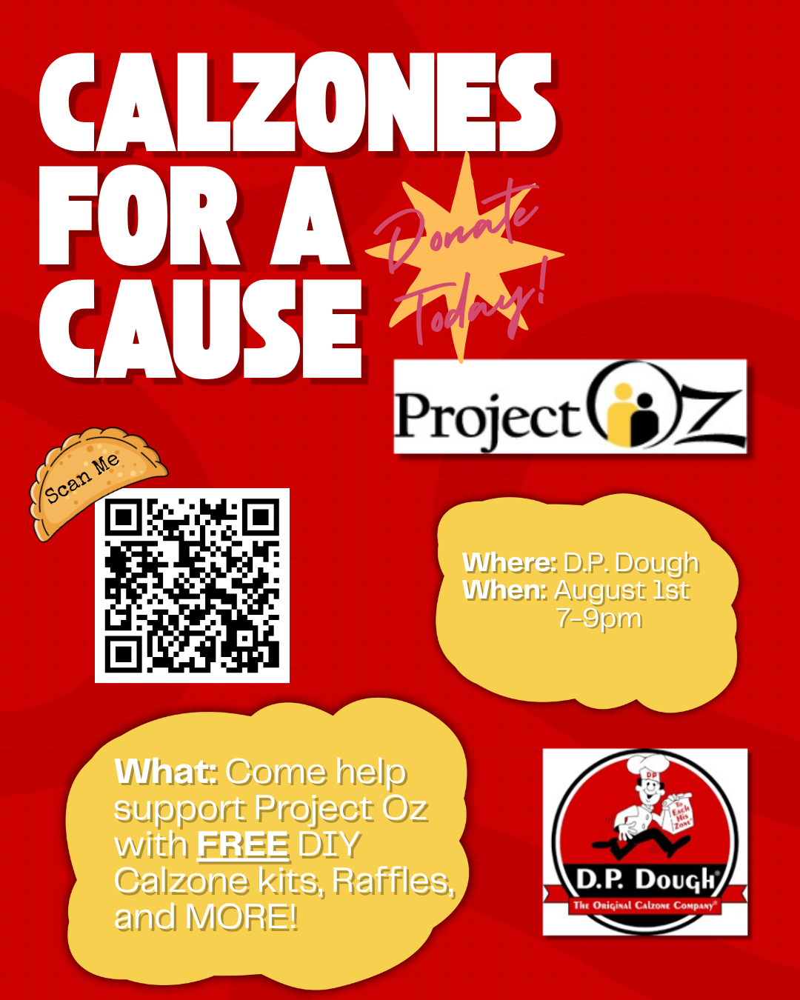
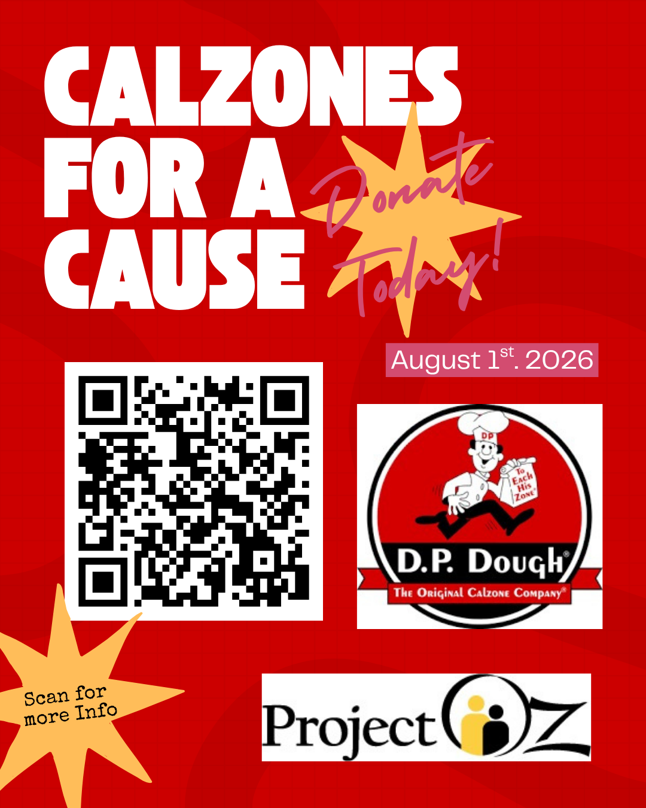
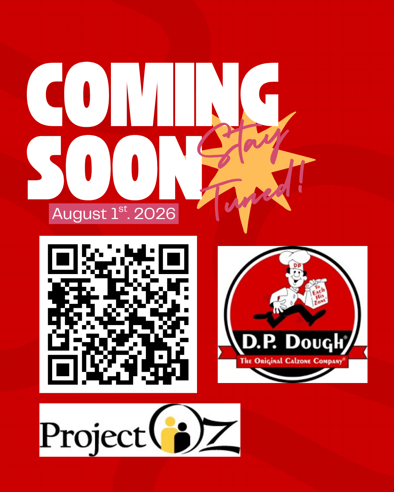

Raffles
Local businesses would donate gift cards or small prizes. Possible examples include Insomnia Cookies, La Bamba, and other local partners.
Launch event plan
A proposed August 1 launch event at DP Dough that uses raffles, QR code flyers, free food incentives, and local promotion to introduce the Project Oz campaign to the Bloomington-Normal community.
Event snapshot
The event would be hosted with DP Dough on August 1 from 7–9 p.m. Flyers and QR codes would direct attendees back to this website so they can learn about Project Oz, donate, and share the campaign.
Local businesses would donate gift cards or small prizes. Possible examples include Insomnia Cookies, La Bamba, and other local partners.
DP Dough would give away a free Zone to the first 20 attendees, helping create early turnout and attention.
DIY calzone kits would give the event a family-friendly activity and make the fundraiser feel more interactive.
Raffle tickets would be sold for $1 each or 10 tickets for $8. This keeps the donation barrier low while still encouraging people to buy multiple entries.
A borrowed speaker could provide music during the event. Because amplified sound may require approval, the plan notes that a Town of Normal noise permit may be needed.
If extra volunteers are needed, the plan suggests contacting ISU Civic Engagement because of its long-running connection to student and community service work.
Event budget
The launch event budget stays simple and focuses on promotion, signage, and small activity supplies. The group would also try to get donated items from local partners to stretch the budget.
Printed signs or banners, ideally donated or discounted by a local company such as FastSigns.
Paid promotion on platforms such as Snapchat and Instagram using both business and campaign profiles.
Chalk, bubbles, or small kid-friendly materials for simple event activities.
Gift cards, raffle items, and event supplies would be requested from local businesses to reduce costs.
Flyer concepts
The launch materials use a bold red DP Dough-style look, a campaign QR code, Project Oz branding, and simple event language.



The launch event makes the QR campaign feel real by giving people a reason to scan, attend, donate, and share.
Donate & share